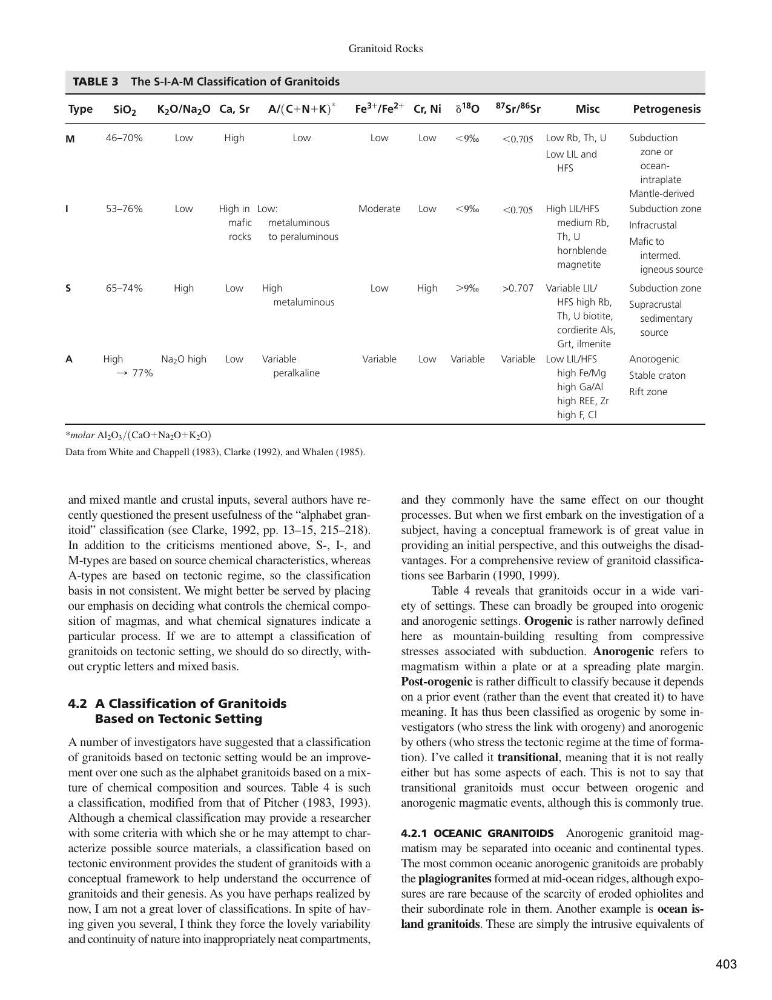

In metamorphic geology (Winter, 2014, pp. 405–415; Bangar, p. 81; Mahapatra, p. 125), metamorphism is defined as the solid-state mineralogical, chemical, and structural adaptation of pre-existing rocks to physical and chemical conditions differing from those under which they originally formed.
Historically and canonically, metamorphic processes are grouped into three grand primary categories based on the spatial scale of the event, the governing geological agent, and the tectonic environment:

| Metamorphic Type | Primary Driving Agent | Stress Regime | Geological Spatial Scale | Representative Rock Suite |
|---|---|---|---|---|
| Contact (Thermal) | Thermal heat ($\Delta T$) from igneous plutons | Hydrostatic / Isotropic ($\sigma_1 \approx \sigma_2 \approx \sigma_3$) | Local: meters to $1\text{--}2\text{ km}$ surrounding intrusions | Hornfels, Spotted slates, Marble, Quartzite, Skarn |
| Regional (Dynamothermal) | Coupled Heat ($\Delta T$) + Directed Stress ($\sigma_1 > \sigma_3$) | Triaxial differential tectonic compression | Regional: hundreds to thousands of $\text{km}^2$ | Slate, Phyllite, Mica-schist, Gneiss, Migmatite |
| Dynamic (Cataclastic) | Directed mechanical shear stress ($\tau$) | High-strain localized shear | Linear / Local: centimeters to tens of meters along fault zones | Fault breccia, Cataclasite, Pseudotachylyte, Mylonite |
In modern petrogenetic taxonomy (Winter, 2014; IUGS Subcommission on the Systematics of Metamorphic Rocks), the three classical types are complemented by specialized metamorphic environments:
Incorrect: "Thermal metamorphism" is essentially a synonym for contact metamorphism (heat-driven alteration around an igneous intrusion). Because contact metamorphism is already explicitly named in the prompt ("Contact, ________ and Dynamic"), listing thermal would be a redundant repetition rather than completing the classical triad.
Incorrect: "Static metamorphism" (or load metamorphism) refers loosely to recrystallization under vertical lithostatic pressure without horizontal tectonic stress (such as burial metamorphism). It is not one of the three foundational primary types established in standard geological curricula.
Incorrect: "Local metamorphism" is a spatial grouping category that encompasses contact, dynamic, and impact metamorphism (events confined to restricted, localized geographic areas). It is not a specific metamorphic mechanism coordinate with Contact and Dynamic.
Correct: By universal scientific agreement and standard textbook definition (Bangar, p. 81; Mahapatra, p. 125; Winter, 2014, p. 410), the three classical, universally recognized types of metamorphism are Contact metamorphism, Regional metamorphism, and Dynamic metamorphism. Regional metamorphism is the vast, orogenic process that accounts for more than $90\%$ of all metamorphic rocks on Earth.
| Metamorphic Category | Primary Heat Source | Role of Directed Differential Stress | Dominant Fabric | Plate Tectonic Environment |
|---|---|---|---|---|
| Contact | Magmatic heat from cooling plutons / batholiths | Absent (Hydrostatic confining pressure) | Non-foliated (granoblastic, hornfelsic) | Continental magmatic arcs, shallow plutonic intrusions |
| Regional | Regional geothermal gradient + crustal thickening + radioactive decay | Dominant (Intense tectonic compression $\sigma_1 \gg \sigma_3$) | Pervasively foliated (slaty, schistose, gneissic) | Convergent collision orogens (Himalayas, Alps, Caledonides) |
| Dynamic | Frictional dissipation (secondary) | Extreme localized shear stress ($\tau$) | Cataclastic / Mylonitic (foliated ribbons or shattered breccia) | Major fault zones, transform faults, crustal detachment faults |
Distinguish between "Contact Metamorphism" and "Regional Metamorphism" based on spatial extent, typical structural fabric, and dominant geological driving agents.
Solution: - Spatial Extent: Contact metamorphism is local, restricted to narrow aureoles ($10\text{ m to } 2\text{ km}$) surrounding igneous bodies. Regional metamorphism covers vast orogenic provinces over thousands of square kilometers ($100\text{ to } 1000+\text{ km}$). - Structural Fabric: Contact metamorphism produces non-foliated, massive hornfelses. Regional metamorphism produces pervasively foliated slates, schists, and gneisses. - Driving Agents: Contact metamorphism is driven primarily by magmatic heat ($\Delta T$) under hydrostatic stress. Regional metamorphism is driven by the coupled combination of regional geothermal heat ($\Delta T$) and directed tectonic compressive differential stress ($\sigma_1 > \sigma_3$).
What is a "pseudotachylyte" and under which of the three metamorphic types does it originate?
Solution: A pseudotachylyte is an ultra-fine-grained, glassy or cryptocrystalline dark rock formed by the frictional melting of seismic fault surfaces during coseismic earthquake slip. It originates under extreme, high-strain-rate Dynamic Metamorphism along brittle-ductile faults where seismic shear strain generates localized flash frictional heating exceeding $1000^\circ\text{C}$ in seconds, melting thin glass veins.
How does the width of a contact metamorphic aureole scale with the size and composition of an igneous intrusion?
Solution: The width of a contact aureole is governed by Fourier's law of conductive heat transfer and thermal diffusion ($x \sim 2\sqrt{\kappa t}$). It scales directly with: 1. Intrusion Size (Thermal Mass): A narrow dyke ($1\text{ m}$ wide) produces an aureole only centimeters wide, whereas a gigantic granitic batholith ($10\text{--}20\text{ km}$ across) maintains sustained hydrothermal/conductive heat output for millions of years, generating an aureole $1\text{ to } 3\text{ km}$ wide. 2. Magma Composition (Initial Temperature): Mafic/ultramafic magmas intrude at $1100\text{--}1200^\circ\text{C}$, producing much higher thermal grades and wider pyrometamorphic aureoles than cool felsic granitic magmas ($700\text{--}800^\circ\text{C}$).
What is a "mylonite" and at what crustal depths does dynamic metamorphism transition from cataclasites to mylonites?
Solution: A mylonite is a cohesive, foliated dynamic metamorphic rock characterized by intense, ductile grain-size reduction (dynamic recrystallization and crystal-plastic dislocation creep) forming fine-grained groundmass ribbons enclosing eye-shaped porphyroclasts. The transition from brittle cataclasites to ductile mylonites occurs at the Brittle-Ductile Transition Zone (BDT), typically at depths of $10\text{ to } 15\text{ km}$ where crustal temperatures reach $300\text{--}350^\circ\text{C}$ (the threshold for plastic dislocation glide in quartz).
Explain why burial metamorphism is characterized by the absence of penetrative foliation, even though confining lithostatic pressure may exceed $3\text{ kbar}$.
Solution: In a stable, subsiding sedimentary basin, confining pressure is purely lithostatic (vertical overburden weight, $\sigma_v = \rho g z$). In the absence of horizontal tectonic shortening or plate convergence, lateral stresses are approximately equal ($\sigma_h \approx \sigma_H$) and differential stress is minimal. Because there is no directed deviatoric differential stress ($\sigma_1 \gg \sigma_3$), growing low-temperature minerals (zeolites, prehnite, pumpellyite) lack a preferred kinematic orientation, preserving original sedimentary bedding fabrics without developing metamorphic foliation.
Which of the three classical metamorphic types is responsible for the formation of the Barrovian metamorphic sequence in the Scottish Dalradian?
Solution: The Barrovian sequence was produced by Regional (Dynamothermal) Metamorphism during the Ordovician Grampian Orogeny ($\sim 470\text{ Ma}$, Caledonian cycle). Crustal thickening caused by the collision of an oceanic island arc with the Laurentian continental margin subjected Dalradian pelites to progressive regional heat and directed tectonic compressive stress, generating the classic Chlorite $\rightarrow$ Biotite $\rightarrow$ Garnet $\rightarrow$ Staurolite $\rightarrow$ Kyanite $\rightarrow$ Sillimanite regional belts.
What is "pyrometamorphism" and how does it relate to contact metamorphism?
Solution: Pyrometamorphism is an extreme, ultra-high-temperature subtype of contact metamorphism produced when rocks come into direct contact with very hot, dry basaltic magma ($T > 1000\text{--}1200^\circ\text{C}$) at very shallow crustal levels or within volcanic pipes. It is characterized by incipient melting (buchites) and high-temperature anhydrous phases such as tridymite, mullite, and sanidine.
How does the presence of volatile aqueous fluids ($\text{H}_2\text{O}$) catalyze regional metamorphic reactions compared to dry contact metamorphism?
Solution: Aqueous fluids act as a powerful thermodynamic catalyst by: 1. Accelerating Reaction Kinetics: Dissolving solid reactants and facilitating rapid advective and diffusive ion transport across grain boundaries ($10^6\text{ to } 10^8\text{ times}$ faster than solid-state lattice diffusion). 2. Lowering Melting Temperatures: Depressing the solidus by several hundred degrees ($T_{wet} \sim 650^\circ\text{C}$ vs. $T_{dry} > 950^\circ\text{C}$). 3. Hydrolytic Weakening: Diffusing into mineral lattices (quartz), weakening $\text{Si-O}$ bonds and accelerating crystal-plastic dislocation creep and ductile foliation development.